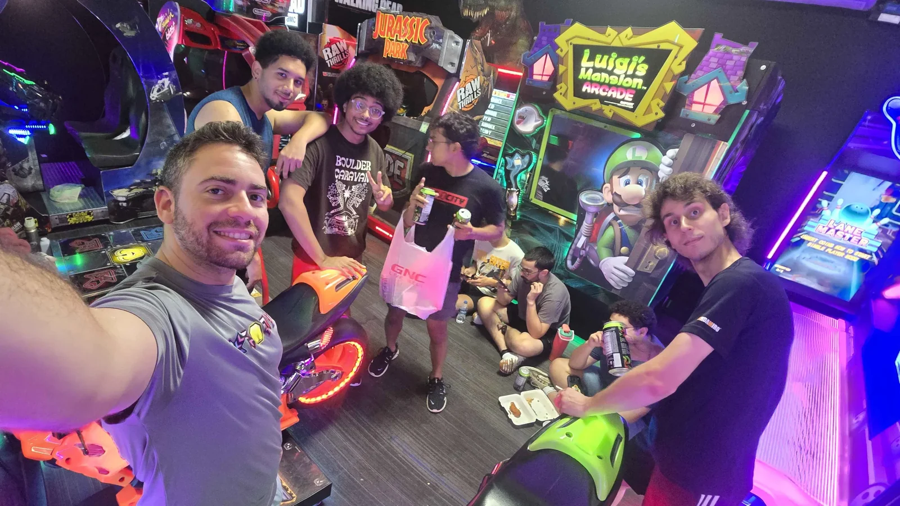
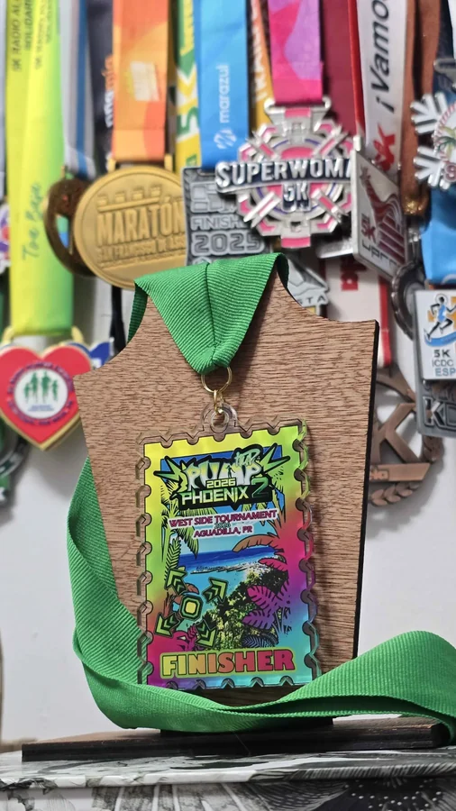

LEVEL × GRADE
Points = level × 100 × grade multiplier. Machine score is displayed separately.
Yogufruti · Aguadilla, Puerto Rico · November 1, 2026
Official points · Best valid attempt per song
| RANK | PLAYER | SONGS | HIGHEST LEVEL | TOURNAMENT POINTS |
|---|
Explore individual plays and their scoring details.
| SONG / PLAYER | CHART | GRADE | MACHINE SCORE | POINTS | Details |
|---|
Select a result for Perfect, Great, Good, Bad, Miss, and the points calculation. N/A means the value is not yet available.
Player profiles and recorded results.


Song covers, BPM, artists and chart information.
Community catalog: Phoenix 2 v1.02.0. Select a song for its chart list and sources.
How tournament points are calculated.
Points = level × 100 × grade multiplier. Machine score is displayed separately.
The highest valid tournament-point result for each player and song counts. Ties remain tied.
S23 counts at its full level. The event’s maximum difficulty is currently uncapped.
A song selected before 30:00 counts even if it finishes afterward. Normal Arcade charts only.
A+ or lower: 0.75 · AA: 1.00 · AA+: 1.05 · AAA: 1.10 · AAA+: 1.20 · S: 1.30 · S+: 1.35 · SS: 1.40 · SS+: 1.45 · SSS: 1.50 · SSS+: 1.55 · SSS+ PG: 1.60
Singles and Doubles score equally at the same level and grade. Legitimate stage pass and break results count; deliberate abandonment with Pass M/G is excluded. Timing and pass/break status remain unverified when absent.